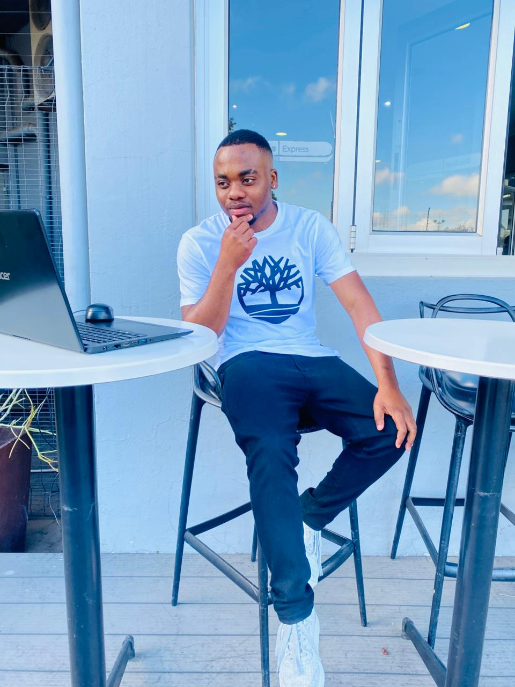

About UbuntuChain
UbuntuChain is dedicated to supporting open-source Bitcoin development. Our mission is to provide secure,
borderless infrastructure for the Lightning Network.
Every donation helps developers maintain the network, improve security, and drive innovation.

Oratile Pine
Front-end Developer and Entry-Level Cybersecurity Analyst with experience operating in fast-paced
freelance environments. I design and build refined, user-centric interfaces while maintaining a
strong emphasis on clean architecture, performance, and security best practices. Accustomed to
balancing multiple roles, I bring a disciplined, detail-oriented approach to both front-end
development and foundational cybersecurity analysis.
Neo Legodi
Front-end developer with a strong appreciation for refined design and well-structured code. I craft
elegant, intuitive interfaces that are as seamless in performance as they are in appearance, always
refining both technical skills and problem-solving abilities.
Olaotse Sehularo
I’m an aspiring software engineer and Computer Science student with a passion for cybersecurity. I’m
part of a technical team where we tackle real-world security challenges and build practical
solutions. I love learning new technologies, problem-solving, and collaborating with others to
create impact.
Omphile Serekwa
Front-end Developer passionate about good design and clean code. I build interfaces that are just not
just functional, but intuitive and fast. comfortable collaborating with teams to deliver
high-quality user experiences, motivated to grow into a strong Front-end Engineer.

King Brian
I am an AI Developer and Designer focused on building intelligent applications and modern digital
solutions. I specialize in artificial intelligence, automation, and user-friendly interface design.
My goal is to create efficient, scalable, and innovative technology that solves real-world problems
and improves digital experiences.
Bongiwe Nxumalo
Aspiring Cloud and Software Developer with FullStack Development| Microsoft Azure Certification|
Bridging BA & Dev with over 10 years in IT
Khwezi Flatela
I am a seasoned professional in Software Engineering with an unwavering passion for Information
Technology. I juggle multiple roles - Entrepreneur, freelance developer, and a father.

Kamogelo Aphane
I am a driven Software Developer with a strong background in Python,Javascript.A foundation with
programming frameworks, with a passion for shaping Africa's financial future.I have hands on
experience in building scalable applications and solving complex technical challenges.